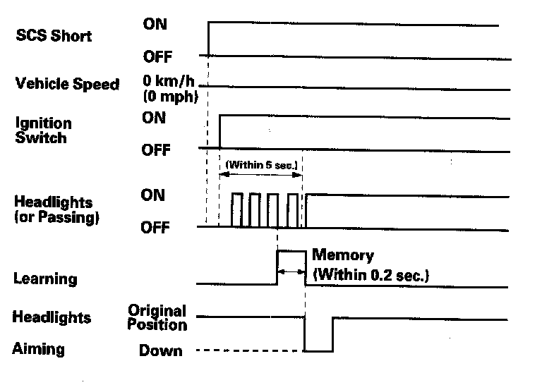

Programming and Relearning
Headlight Initial Position Learning ProcedureDo the headlight initial position learning when any of the related parts of the headlight auto leveling system shown is replaced:
- Headlight
- HID unit
- Left-front suspension stroke sensor
- Left-rear suspension stroke sensor
- Headlight leveling motor
- Headlight auto leveling control unit
Learning Procedure
Before learning the headlights:
- Park the vehicle on a level surface.
- Make sure the tire pressures are correct.
1. Turn the ignition switch OFF.
2. Remove all of the baggage from the vehicle.
3. Slide the front seats backward fully.
4. Have the driver (about 165 lb (75 kg)) or someone who weighs the same sit in the driver's seat.
5. Connect the HDS to the data link connector.
6. Jump the SCS line with the HDS.
7. Turn the ignition switch ON (II).
8. Within 5 seconds, turn the headlights (low beam) or passing switch ON and OFF three times repeatedly, and leave them on.
- If the headlights aiming move down (about 2 in. at 10 feet), then return to the original position, the initial position learning is complete.
- If the headlights aiming don't move, go to step 1 and repeat the procedure.
9. Turn the ignition switch OFF, and disconnect the HDS from the data link connector.

10. Adjust the headlight aim to conform with the applicable requirements.